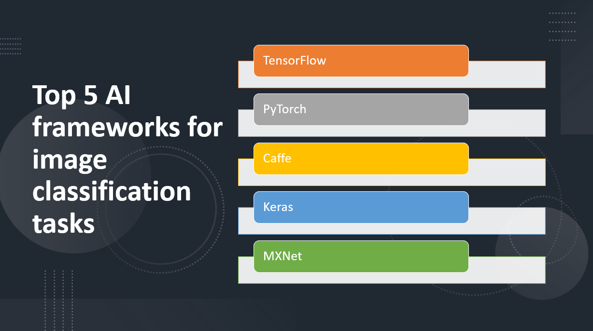

Introduction
Image classification is a fundamental task in the field of computer vision, and Artificial Intelligence (AI) frameworks have played a significant role in advancing image classification capabilities. These frameworks provide developers with powerful tools and libraries for building and training deep learning models to classify images accurately. In this blog post, we will explore the top five AI frameworks for image classification tasks, enabling researchers and practitioners to tackle image recognition challenges effectively.
Why use AI frameworks for image classification tasks
- AI frameworks offer pre-built and customizable architectures optimized for image classification tasks.
- AI frameworks leverage parallel computation and GPU support for faster training and parameter optimization.
- AI frameworks enable reusing pre-trained models for new image classification tasks, saving time and resources.
- AI frameworks provide a wide range of image processing libraries and evaluation tools for streamlined development.
- AI frameworks have active user communities offering resources and shared knowledge for image classification tasks.
Here Are Our Top 5 AI frameworks for image classification tasks:
1: TensorFlow
Overview and Importance
TensorFlow is an open-source machine learning framework developed by Google that has gained immense popularity and is widely used in the field of AI. It is particularly renowned for its capabilities in image classification, where it has been employed in numerous applications. TensorFlow's importance stems from its robust features, extensive community support, and flexibility, making it a preferred choice for developers and researchers.
Learn more about TensorFlow
Key Features
High-Level APIs
- TensorFlow provides user-friendly and intuitive high-level APIs, such as Keras, for building and training deep learning models.
Pre-Trained Models and Transfer Learning
- TensorFlow supports pre-trained models and transfer learning, enabling users to leverage pre-trained models and fine-tune them for specific tasks with limited data.
Flexibility and Scalability
- TensorFlow offers flexibility and scalability, allowing deployment on various platforms, optimization with distributed computing, and utilization of hardware accelerators for faster computation.
2: PyTorch
Overview and Importance
PyTorch, an open-source deep learning framework, is highly popular and adopted in the AI community. Developed by Facebook's AI Research lab, it provides a dynamic and intuitive approach to building and training neural networks. PyTorch's significance lies in its flexibility, ease of use, and support for cutting-edge deep learning techniques. Its define-by-run paradigm allows seamless model construction, rapid prototyping, and efficient debugging. GPU acceleration support enables efficient training on large-scale datasets.
Learn more about PyTorch
Key Features
Dynamic Computational Graph
- PyTorch's dynamic computational graph allows for flexible graph definition and modification during runtime.
Automatic Differentiation
- PyTorch's autograd module enables automatic differentiation for computing gradients and performing backpropagation.
TorchVision
- PyTorch's TorchVision provides a high-level interface with pre-trained models and utilities for computer vision tasks.
3: Caffe
Overview and Importance
Caffe is an efficient and fast deep learning framework initially developed by the Berkeley Vision and Learning Center (BVLC). It excels in convolutional neural networks (CNNs) and computer vision tasks, making it popular among researchers and industry professionals. Caffe's importance lies in its streamlined workflow, ease of use, and optimized performance, particularly for vision-related tasks. It has widespread adoption in both academic research and industry, particularly in areas like image classification, object detection, and image segmentation.
Learn more about Caffe
Key Features
Expressive Architecture
- Caffe allows users to define and customize network architectures easily using a configuration file format, enabling flexible experimentation and adaptation.
Pre-Trained Models
- Caffe provides a comprehensive model zoo with a wide range of pre-trained models, particularly in computer vision tasks, enabling users to leverage existing models for their own projects.
GPU Support
- Caffe's efficient GPU implementation accelerates training and inference processes, enabling faster computations and real-time predictions, which is especially beneficial for tasks requiring low latency.
4: Keras
Overview and Importance
Keras, an open-source deep learning framework, stands out for its user-friendly and intuitive interface. It enables fast experimentation and prototyping of neural networks, appealing to both beginners and experienced researchers. Keras simplifies model development through its high-level API, abstracting away low-level complexities. It is built on backend frameworks like TensorFlow and Theano, providing a unified interface for deep learning tasks. The simplicity and convenience of Keras have led to its widespread adoption in both research and industry.
Learn more about Keras
Key Features
User-Friendly Interface
- Keras offers an intuitive API that simplifies the process of building and training neural networks, making it accessible to both beginners and experienced developers.
Modular Architecture
- With its modular design, Keras allows users to easily create and customize complex network architectures by stacking and configuring layers, enabling rapid prototyping and experimentation.
Backend Flexibility
- Keras supports multiple backend frameworks, giving users the flexibility to choose the backend that best suits their needs and seamlessly integrate with other tools and frameworks.
5: MXNet
Overview and Importance
MXNet is an efficient and flexible open-source deep learning framework developed by the Apache Software Foundation. It excels in handling large-scale and complex deep learning tasks across various hardware devices. MXNet's dynamic computational graph and dynamic control flow make it suitable for tasks with varying input sizes or dynamic architectures. Its importance lies in its scalability, efficiency, and flexibility, allowing users to define and customize neural networks to meet specific requirements.
Learn more about MXNet
Key Features
Scalability and Efficiency
- MXNet is optimized for distributed training and can efficiently utilize hardware resources, enabling the training of large-scale models and accelerating computation through parallel processing.
Flexible and Dynamic Computational Graph
- MXNet's dynamic computational graph allows for dynamic control flow, making it easier to implement complex models with varying input sizes or models with dynamic architectures.
Multiple Language Support
- MXNet supports multiple programming languages, providing language bindings for Python, R, Julia, Scala, and C++, allowing users to work with their preferred language for deep learning development.
Conclusion
AI frameworks play a significant role in image classification tasks, enabling researchers, developers, and practitioners to build powerful and accurate models for a wide range of applications. These frameworks provide the necessary tools, libraries, and algorithms to efficiently train and deploy deep learning models for image recognition tasks.
Recapping the top five AI frameworks for image classification:
TensorFlow: TensorFlow is a popular and widely used AI framework known for its robust capabilities, extensive community support, and flexibility. It offers high-level APIs like Keras, pre-trained models, and transfer learning options, making it suitable for various image classification tasks. TensorFlow finds applications in industries such as healthcare, autonomous vehicles, and e-commerce.
PyTorch: PyTorch is another prominent AI framework that has gained popularity for its user-friendly interface and dynamic computational graph. It offers high-level APIs and supports custom model architectures, making it favored by researchers and practitioners in the deep learning community. PyTorch is applied in computer vision, natural language processing, and other domains.
Caffe: Caffe is a deep learning framework specifically designed for speed and efficiency. It excels in image classification tasks and is known for its simplicity and ease of use. Caffe is widely used in academic research and industry applications, including object recognition, image segmentation, and visual understanding.
Keras: Keras is a high-level API that runs on top of TensorFlow, making it accessible and easy to use for building deep learning models. It provides a user-friendly and intuitive interface, enabling rapid prototyping and development. Keras finds applications in various image classification tasks and has a strong focus on simplicity and productivity.
MXNet: MXNet is an open-source deep learning framework that offers scalability, efficiency, and flexibility. It supports dynamic control flow and provides multiple language bindings, making it suitable for diverse applications. MXNet is used in computer vision, natural language processing, recommendation systems, and industrial automation.
AI frameworks offer advantages like scalability, flexibility, and efficient hardware utilization. They have applications in healthcare, autonomous vehicles, e-commerce, and industrial automation. Readers are encouraged to explore and choose frameworks based on project requirements, considering factors like community support, documentation, ease of use, and integration options. By leveraging these frameworks, researchers and developers can advance image classification capabilities and drive progress in computer vision, unlocking new opportunities in various industries. Continuous evolution ensures these frameworks remain at the forefront of image recognition technologies, enabling groundbreaking applications.